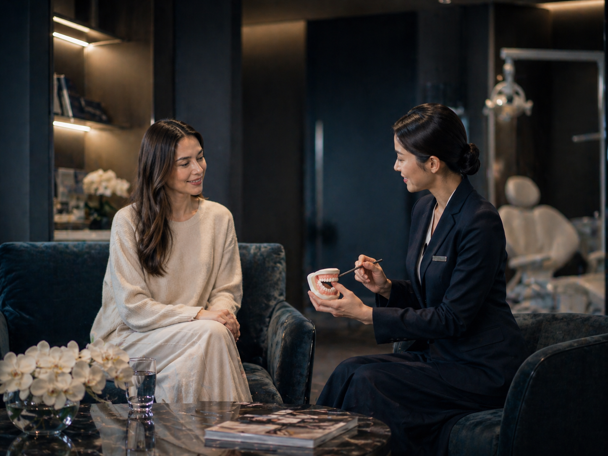
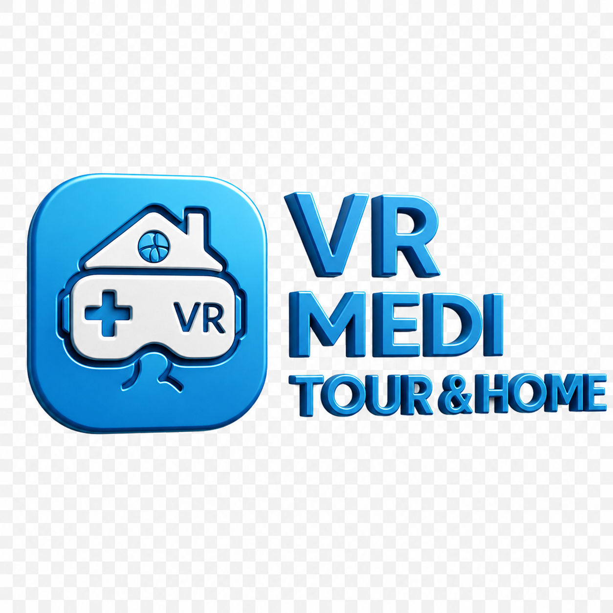
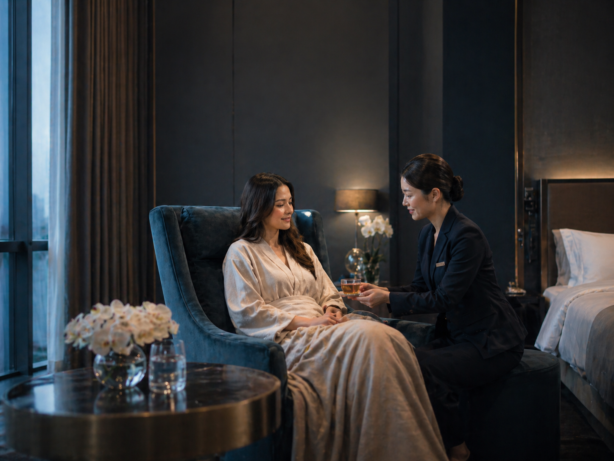
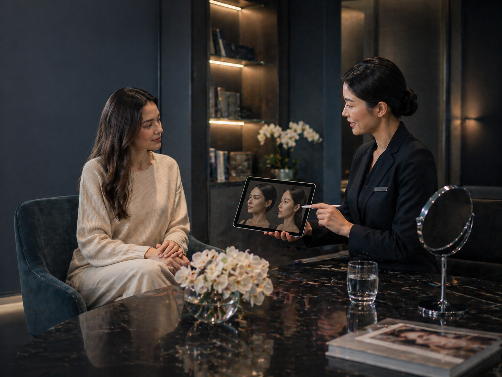
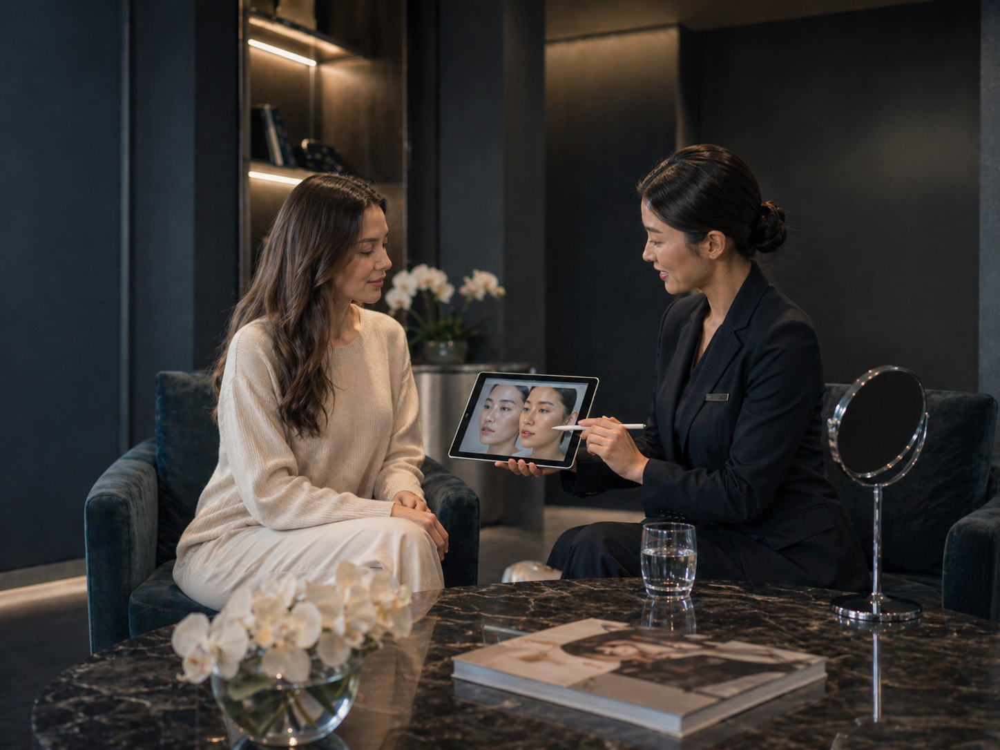
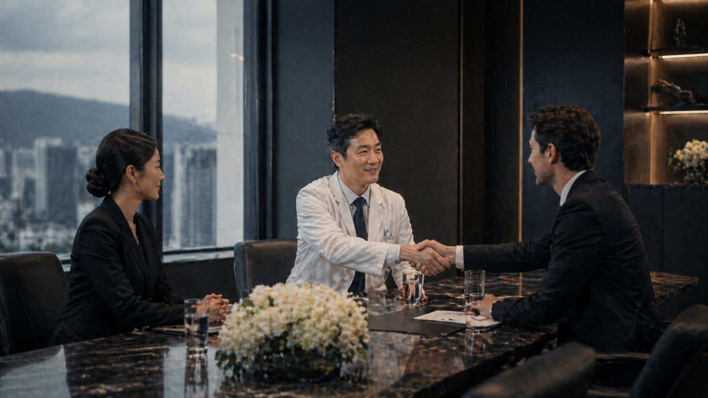
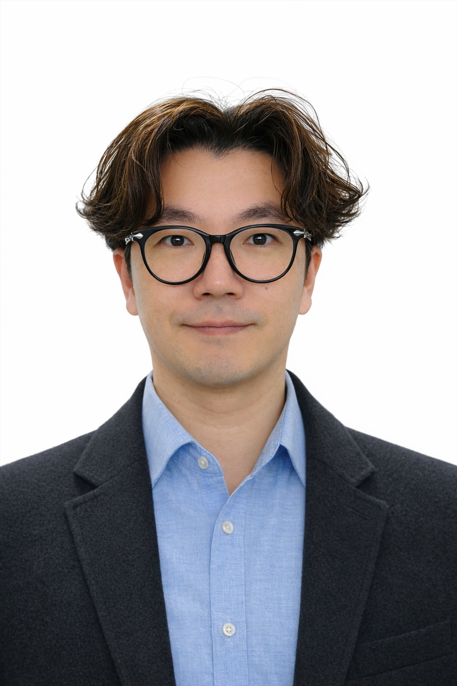

Dermatology
acne, pigmentation, lifting, scars, skin booster

Korea–Vietnam Medical Travel Coordination
We help international patients prepare Korean hospital consultation, documents, schedule, interpreter, transport, stay, and recovery support before visiting Korea.

acne, pigmentation, lifting, scars, skin booster
eye, nose, lifting, facial contour, revision consultation

implant, whitening, orthodontics, aesthetic dentistry
basic check-up, cancer screening, premium check-up

interpreter, transport, stay, recovery support
AI does not diagnose. AI only helps organize inquiries, detect missing information, and prepare human review.

We do not guarantee fixed prices before hospital consultation.
Estimated costs may vary depending on diagnosis, test results, treatment scope, stay duration, and hospital policy.
After medical institution review, we help explain estimated ranges clearly.
Example (not a testimonial): A patient from Vietnam submits symptoms, photos, preferred date, and budget. AI organizes the case, then a coordinator reviews and prepares hospital communication.

Your photos, symptoms, documents, and contact details are used only for consultation preparation and hospital communication.
We do not share your information with third parties without your consent.
When hospital review is needed, we ask for your permission before forwarding documents.
VR MEDI TOUR & HOME was created for international patients who feel uncertain before contacting Korean hospitals.
We help organize language, documents, photos, schedules, travel needs, and communication so that the hospital consultation process can begin more clearly and safely.
We are not a hospital, do not diagnose, and do not guarantee treatment results or fixed prices. Final medical decisions are made by licensed Korean medical institutions.
VR MEDI TOUR & HOME Co., Ltd.
Korea · Vietnam Medical Travel Coordination
Busan HQ · Seoul Gangnam Branch · Hanoi Network
Jung Sung YoungFounder, VR MEDI TOUR & HOME
Request Medical Travel Consultation
Simple first-step form for first-time users.
Submit basic details.
Coordinator reviews and confirms missing items.
Prepared inquiry is shared with a licensed Korean medical institution.
Use this when you want treatment consultation preparation.
Use this when your hospital wants multilingual inquiry support.
VR MEDI TOUR & HOME is not a hospital. It does not diagnose, guarantee treatment results, or guarantee fixed prices. Final diagnosis, treatment availability, confirmed cost, and medical decisions are made only by licensed Korean medical institutions.